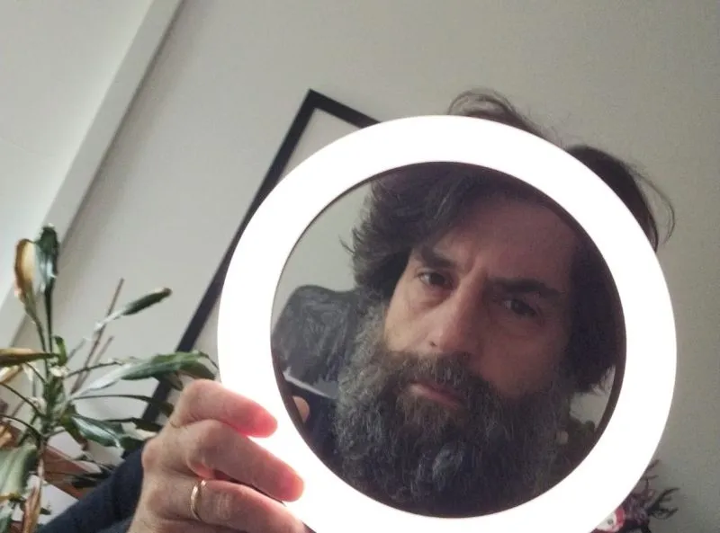

Droits et protection numériques
La législation doit suivre le rythme de la numérisation

Bienvenue dans la jungle
En matière de droits numériques et de protection des consommateurs, les institutions européennes semblent encore réfléchir en termes de bandes magnétiques et de fax. Tandis que les États-Unis et la Chine tentent de dominer, l'UE met en place les réglementations qui garantissent que l'Europe ne le fera pas. À l'autre coin d'internet, l'UE permet un accès non filtré aux réseaux sociaux américains et chinois comme s'ils n'étaient pas utilisés en tant qu'instruments de propagande politique ou pour s'assurer que notre jeune génération grandisse avec une capacité d'attention de 30 secondes, se sente inférieure parce qu'elle ne peut pas s'offrir du chocolat de Dubaï et soit incapable d'envoyer un simple document texte par e-mail. Pire encore, nous introduisons des lois sur la cybersécurité qui se résument à cocher des cases et à mettre en place de la surveillance, au lieu de traiter les vrais risques liés non seulement aux dépendances technologiques, mais aussi à tout, de la fraude en ligne aux cyberattaques.
Comme dans d'autres domaines, il nous manque une vision européenne de ce que nous voulons que la technologie européenne soit et fasse. Rien ne nous oblige à suivre les modèles numériques américains ou chinois, ce qui signifie que nous n'avons ni à succomber à un « Wild West » darwinien, ni à un État orwellien visant à attribuer un score social à chaque citoyen. À quoi devrait ressembler le modèle numérique européen ? Un aspect qui m'importe et dont on parle trop peu est celui des droits numériques et de la protection des consommateurs.
Prenons l'exemple des réseaux sociaux : savons-nous combien d'utilisateurs sont des bots fabriquant des opinions pour les faire monter en popularité ou des algorithmes qui mettent en avant certains récits plutôt que d'autres ? L'UE ne doit pas interdire tel ou tel récit, mais elle doit garantir l'égalité des conditions en matière de portée et, si certaines plateformes utilisent leur portée pour imposer des opinions spécifiques, elles doivent soit fournir de la transparence, soit, mieux encore, proposer le contenu dans des formats interopérables pouvant être consultés de l'extérieur.
Un autre exemple est celui de l'IA ou des modèles LLM (chatgpt) qui non seulement scrapent illégalement des contenus protégés par le droit d'auteur, mais qui, ce faisant, font tomber tous les sites sauf les plus grands, incapables de gérer l'énorme nombre de requêtes de téléchargement. Tous les sites disposent d'un fichier robot.txt qui définit quel contenu peut être consulté ou scrapé. L'UE pourrait simplement rendre le robot.txt juridiquement contraignant, rendre l'identification des scrapers de contenu obligatoire et autoriser des actions collectives contre le scraping illégale.
Un dernier exemple est la fraude en ligne galopante, des escroqueries amoureuses aux cyberattaques. Nous avons un système apparemment solide pour le vol de cartes bancaires où les institutions financières sont responsables du signalement des transactions frauduleuses - comme ma banque qui m'appelle pour me demander si je viens d'acheter une télévision à 3 000 € au Japon. Si ce n'est pas le cas, ma carte bancaire a été volée, j'en obtiendrai une nouvelle et la transaction sera annulée. Comparez cela à votre grand-père solitaire transférant 25 000 € à sa prétendue nièce au Ghana ou ladite nièce achetant pour 1 000 € de cartes iTunes en lot et envoyant les codes à quelqu'un se faisant passer pour vous, sans que ni la banque ni le commerçant n'en soient responsables.
En théorie, de simples modifications législatives pourraient faire la différence. Que propose l'UE à la place : le Chat Control – la surveillance orwellienne complète de toutes les conversations privées de chacun. Nous pouvons nous estimer chanceux si nous nous retrouvons seulement avec un score social comme en Chine qui pourrait simplement nous empêcher d'acheter des billets de bus si nous avons critiqué une mesure gouvernementale. Vous mettez une lettre papier dans une enveloppe avant de l'envoyer en supposant que personne ne peut lire ce que vous avez écrit. Il devrait en être de même pour tout autre moyen de communication privée et l'UE doit être dénoncée pour sa tentative de supprimer la vie privée des citoyens – du chat control à l'abolition de l'argent liquide pour des motifs qui n'atteignent jamais réellement le débat public.
Mes points d'attention
-
Interopérabilité
Le Digital Services Act exige que les fournisseurs de cloud soient interopérables, afin que je puisse déplacer mon service cloud d'un fournisseur à un autre. Il devrait en être de même pour mon contenu en ligne. Il doit appartenir à l'auteur (et non à la plateforme sur laquelle il est publié – changement important) et toutes les plateformes doivent utiliser des formats interopérables avec des API publiques, afin que je puisse publier un message sur plusieurs plateformes et, plus important, récupérer des messages de qui je veux et d'où je veux dans mon flux privé. L'UE n'a pas besoin de construire son propre Facebook. L'interopérabilité permettra aux utilisateurs de voir ce qu'ils veulent dans leur propre flux – pas de bots, pas d'algorithmes d'IA, pas de plateforme centrale ou fédérée.
-
Vie privée
La vie ne devrait pas être un concours de popularité, et nos vies numériques ne devraient pas non plus être gamifiées de manière à ce que nous marquions des points lorsque nous remplissons notre déclaration d'impôts à temps et que nous en perdions ou soyons interdits de voyage si nous nous plaignons du fait que la Deutsche Bahn n'est pas ponctuelle. Le secret de la correspondance, qui s'applique aux lettres papier, est inscrit dans la Constitution de nombreux pays. Il devrait également s'appliquer aux messages numériques et toute tentative des gouvernements européens et nationaux d'introduire une surveillance de masse doit être stoppée. Sinon, il faudrait également supprimer les enveloppes en papier, car les terroristes pourraient se tourner vers les lettres.
-
Responsabilité
Les intermédiaires financiers fournissent un service consistant à transférer vos fonds d'un compte à un autre. Ce service doit déjà se conformer à certaines exigences légales comme la réglementation sur le blanchiment d'argent. Il devrait également inclure des obligations de diligence en matière de KYC (connaissance du client) et garantir la sécurité du service financier. Les prestataires de services devraient donc être tenus responsables de l'exécution de transactions frauduleuses. Cela devrait inclure non seulement la banque lorsque votre grand-père envoie les 25 000 € susmentionnés au Ghana, mais aussi les commerçants en ligne vendant des cartes cadeaux qui facilitent le blanchiment d'argent et sont utilisées comme monnaie semi-anonyme.
Articles de blog associés
-

Chat Control : la fin du secret de la correspondance ?
(Sven Franck, )
Même si 72 % de la population européenne est contre, la surveillance totale de notre communication numérique pourrait bientôt devenir une réalité. Donc, il faut alors aussi abolir le secret de la correspondance. Lire la suite. -
 L'UE devrait-elle couper les réseaux sociaux ?
(Sven Franck, )
La consultation publique sur le futur bouclier de la démocratie en Europe touche à sa fin, et malgré le bruit de fond important venant de Slovaquie, il est urgent de rendre nos systèmes démocratiques plus résilients. Lire la suite. -

Bananes : courbées. Capuchons : fixés. Réseaux sociaux : à votre tour !
(Sven Franck, )
Les effets négatifs des réseaux sociaux éclipsaient depuis longtemps leurs avantages, bien avant le retour de Donald Trump au pouvoir. Comme pour la malbouffe, la Commission européenne dispose des outils réglementaires pour nous protéger. Elle pourrait faire de l'espace numérique européen un monde meilleur. Cela devient urgent. Lire la suite.